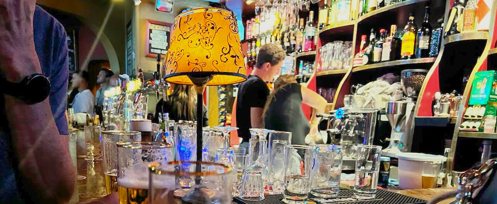
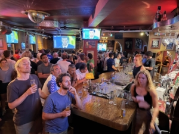
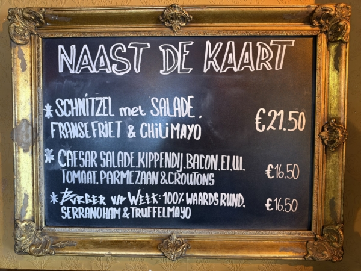

Valeriusstraat 18, Den Haag
Sportscafé Not Out
Al 20 jaar het beste sportscafé! Elke wedstrijd op een groot scherm, een keuken waar je goed kunt eten en altijd een koud biertje.
Sport kijken kan bijna nergens zo goed
Door de 12 HD-schermen en een HD-beamer kun je bij ons altijd van je favoriete sport of club genieten. Meerdere wedstrijden tegelijk zijn geen probleem. Zo kan het gebeuren dat je een Eredivisiewedstrijd kijkt en uit een andere hoek Italiaans gejuich hoort: doelpunt in de Serie A.
Behalve voor voetbal kun je voor bijna elke andere sport bij ons terecht.
- Eredivisie
- Premier League
- La Liga
- Serie A
- Bundesliga
- Champions League
- Europa League
- Conference League
- NFL
- Formule 1
- Rugby Union

Programma deze week
Het schema wisselt elke week. Twijfel je? Bel of vraag het aan de bar.
Dinsdag
- Real Madrid - PSVChampions League
- Arsenal - Borussia DortmundChampions League
- Feyenoord - FC PortoChampions League
- Man City - NapoliChampions League
Woensdag
- Sabah Baku - BarcelonaChampions League
- Sporting CP - Man UnitedChampions League
- PSG - AS RomaChampions League
- Lille OSC - Bayern MünchenChampions League
- Club Brugge - LiverpoolChampions League
- Internazionale - VfB StuttgartChampions League
Donderdag
- Ajax - ThunConference League
- AC Milan - BenficaEuropa League
- N.E.C. - Stade RennesEuropa League
- SC Freiburg - FC TwenteConference League
- Philadelphia - Dallas CowboysNFL
Vrijdag
- Rugby UnionRugby
- Nottingham Forest - ChelseaPremier League
- Rugby UnionRugby
Zaterdag
- Rugby UnionRugby
- Hamburger SV - Bayern MünchenBundesliga
- Man United - BrentfordPremier League
- Rugby UnionRugby
- Real Madrid - AlavésLa Liga
Zondag
- Everton - LiverpoolPremier League
- Rugby UnionRugby
- Feyenoord - AjaxEredivisie
- A Coruña - BarcelonaLa Liga
- GP van QatarFormule 1
- Arsenal - Man CityPremier League
- Rugby UnionRugby
- NFL Red ZoneNFL
- Borussia Dortmund - Bayer LeverkusenBundesliga
- SF 49ers - Seattle SeahawksNFL
Een keuken waar je goed kunt eten
In een café als het onze mag de saté natuurlijk niet ontbreken. Maar inmiddels hebben we ook onze eigen klassiekers op de kaart staan, zoals de Big Bacon Cheeseburger en de Gado Gado 2.0.
Naast onze kaart, die regelmatig wisselt, staan er elke week drie wisselende gerechten op het bord naast de bar.
Naar de hele kaart
Naast de kaart
Wisselt wekelijks. Dit stond er laatst op:
- Schnitzel met salade, Franse friet & chilimayo21,50
- Caesar salade met kippendij, bacon, ei, ui, tomaat, parmezaan & croutons16,50
- Burger van de week: 100% Waards rund, serranoham & truffelmayo16,50


Eten & drinken
Eten, bier, wijn en gin & tonic. Heb je een voedselallergie of andere wensen voor de gerechten? Laat het ons weten!
Voor de kleintjes.
Van de tap. NIX18.
Prijzen per glas en per fles. NIX18.
Prosecco
Wit
Rosé
Rood
NIX18.

Ruime keus aan de tap
Van vertrouwde klassiekers tot speciaalbieren die je misschien nog niet kent. Of je nu gaat voor een koud glas pils tijdens de wedstrijd of liever iets bijzonders uitprobeert: er is altijd wel iets dat bij je past. Proost!
Nu op de wisseltap: Leute Bokbier
Bekijk de bierkaart
Poolen en andere spelletjes
Naast de pooltafel staan in de kast tal van andere spellen. Van Risk en schaken tot Stef Stuntpiloot en Jenga.
Over de naam
"Not Out" is een cricketterm. Het is een beladen moment in de wedstrijd, waarop de tegenstander aan de umpire (scheidsrechter) vraagt of je uit bent of niet. In de seconden daarna beslist de umpire of je out dan wel not out bent.
Sportscafé Not Out opende in 2004 de deuren na een grondige verbouwing. Wat begon als buurtcafé met een tv en een goede hap, is inmiddels uitgegroeid tot een zaak met 12 schermen en een keuken waar je goed kunt eten.
In de Not Out willen we je graag het gevoel geven dat je te gast bent. Wat ons betreft kan er veel, en we proberen aan je verzoek tegemoet te komen.
Kom langs
Valeriusstraat 182517 HR Den Haag
Openingstijden
| Maandag | 14:00 - 01:30 |
|---|---|
| Dinsdag | 14:00 - 01:30 |
| Woensdag | 14:00 - 01:30 |
| Donderdag | 14:00 - 02:00 |
| Vrijdag | 14:00 - 02:00 |
| Zaterdag | 12:00 - 02:00 |
| Zondag | 12:00 - 01:30 |